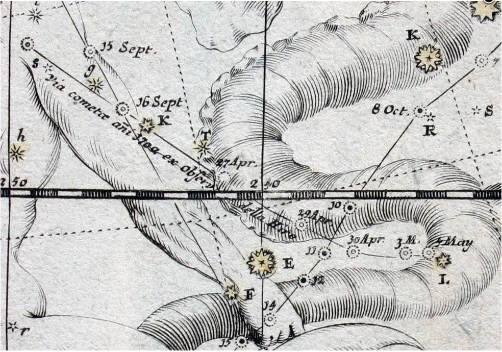
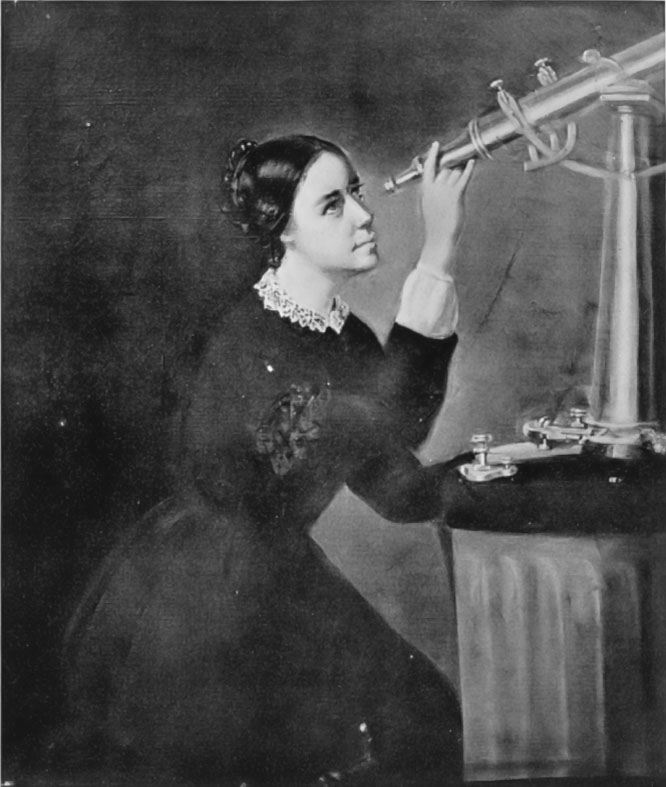
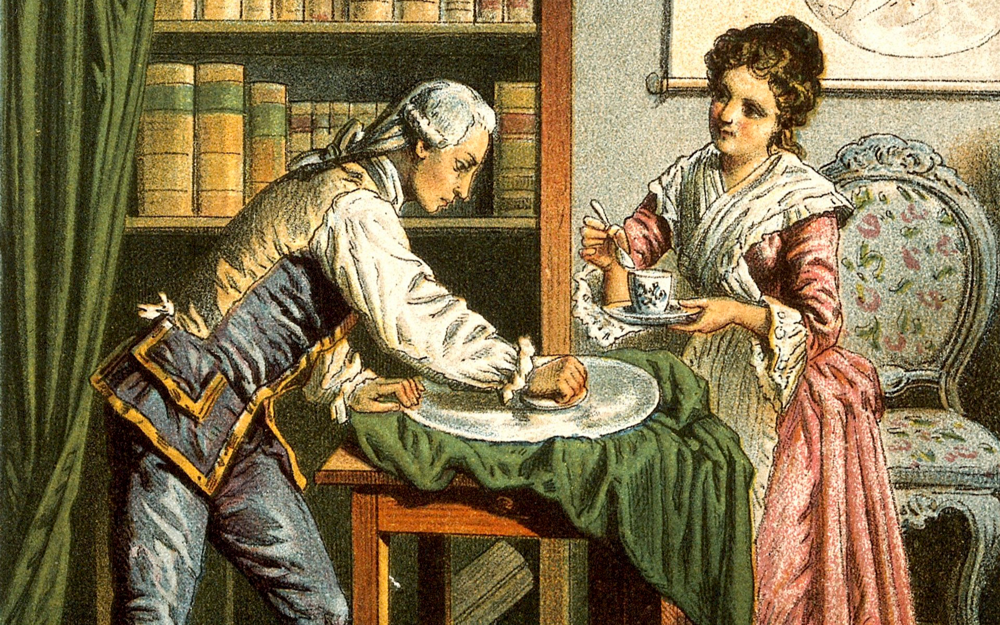

Maria Winkelmann née le 25 février 1670 à Leipzig en Allemagne et morte le 29 décembre 1720 à l'âge de 50 ans. Elle est née Maria Margaretha Kirch de nationalité Allemande, elle fut une astronaume célèbre qui a contribué à la poursuite des découverte de l'astronomie. Et également l'une des personnalités de sa profession les plus célèbres de son époque Elle eu 4 enfants dont 3 filles et un garçon avec son mari Gotfriech Kirch
Un combat féministe:
Lors de son début de carrière vers ses 20 ans, elle rencontre à l'Académie royale des sciences de Berlin Godfriech Kirch astronaume allemand de 30 ans son ainé qui deviendra son futur collègue et mari. Ce dernier l'instruit comme son père l'avait fait avant lui. Ensemble, ils travaillent cependant elle est considéré plus comme son assistante que son égal. Lors de sa découverte qui l'a fait connaître, son mari s'en est attribué les mérites de peur d'être ridiculisé pour la société de leur époque. Plus tard, en 1710, l'année de sa mort, il avouera la vérité sur la trouvaille de sa femme, sur ce qu'il s'est passé et plus précisement qui en est l'auteur.
Maria Winkelmann, sa vie:

Photo de la comète C/1702 H1.

Portrait de Maria Winkelmann

Maria et son mari Godfriech
Jeunesse: Elle à été intsruite dès son jeune âge par son père. Cette dernière a grandi dans une famille où les différences entre l'éducation transmise pour les garçons et les filles n'existaient pas. C'est pourquoi elle a reçu ce genre d'éducation. Depuis son enfance, elle s'interesse à l'astronomie. Astronomie: Science de l'observation des astres, qui cherche à expliquer leur origine, leur évolution, ainsi que leurs propriétés physiques et chimique.
Popularité : Elle fut célèbre pour avoir identifié une nouvelle comète dans le ciel en 1712. C'est la première femme à avoir fait ce type de découverte, ce qui à aider à révolutionner la place des femmes dans l'astronomie. Cette dernière s'appelle C/1702 H1(La comète C/1702 H1 est une comète non périodique, qui était visible à l'œil nu à cette époque). Cepandant lorsque qu'elle a rendu cette découverte publique son mari, et collègue s'en est approprié le mérite.
Honneur & récompense: Elle a effectivement gagné un prix lors de sa carrière professionnelle, elle a gagné la médaille d'or de l'Académie royale des sciences de Berlin. Son nom à été donné à l'astéroïde de la ceinture principale en son honneur. On l'a nommé "(9815)MariaKirch".
Maria Winkelmann publie différents ouvrages à son nom pour obtenir la reconnaissance qui lui ai du à cause de l'incident passé avec son mari. Elle a publie les ouvrages suivant : donc un qui comprenait ses observations sur les aurores boréales ( publié en 1707),puis la brochure nommée Von der Conjunction der Sonne des Saturni und der Venus sur la conjonction du soleil avec Saturne et Vénus ( paru en 1709), et enfin la conjonction attendue de Jupiter et de Saturne en 1712. Tous ces ouvrages ont été paru en allemand dans un célèbre journal national.
Différentes citations:
Alphonse Des Vignoles président de l'académie d'astronomie de Berlin fut la seule personne qui l'a soutenu. Elle a contribué à la poursuite des découverte dans l'astronomie. Il a déclaré notament ceci :
"Mme Kirch préparait des horoscopes à la demande de ses amis, mais toujours contre son frès et pour ne pas être désagréable envers ces mécènes".
« "A l'heure du déjeuner, peu après onze heures, je commençai mes observations. Je travaillais avec le grand quadrant situé à l'étage, Christinchen [sa fille], au rez-de-chaussée avec le petit quadrant. Je frappais le sol pour lui indiquer que j'avais mesuré l'altitude. Nous eumes du soleil avec quelques nuages intermittents » Déclara Mme Winkelmann.